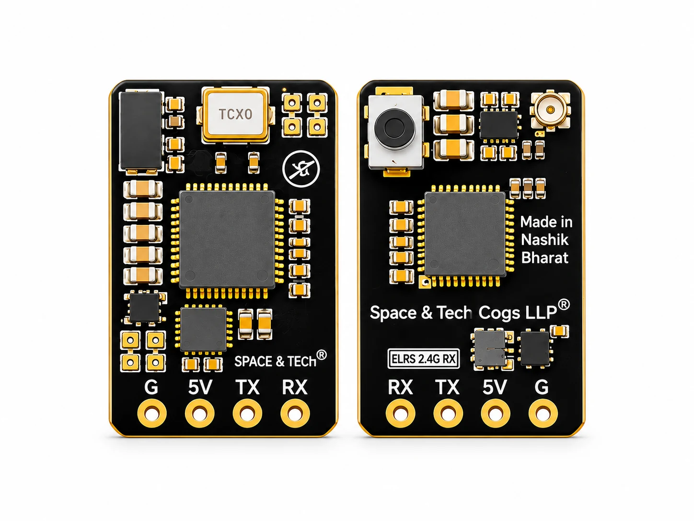

ExpressLRS (ELRS) receivers: what they are and how to choose
Quick answer: ExpressLRS is an open-source radio link known for low latency and long range. Choose 2.4 GHz for freestyle and racing, 900 MHz for maximum range, and match it to your transmitter module.
What is ExpressLRS?
ExpressLRS, or ELRS, is an open-source radio control link for drones. It focuses on low latency, strong link quality and long range at a low cost, and it supports telemetry back to your radio.
2.4 GHz or 900 MHz?
- 2.4 GHz: very fast packet rates, great for freestyle and racing, and the most common choice.
- 900 MHz: lower frequency that handles obstacles better and reaches farther, popular for long range flying. Check your local frequency rules.
Choosing a receiver
- Size and weight: tiny receivers suit micro builds.
- Antenna type: a good antenna and correct placement matter more than raw power.
- Telemetry: pick one that supports the telemetry data your radio shows.
- Firmware version: keep the receiver and transmitter module on compatible ELRS versions.
Binding and setup
Update both sides to compatible versions, set the binding phrase or use the bind button, then check the UART and protocol settings in your flight controller firmware. Test the failsafe with props off.
Related products from Space and Tech Engineering

2.4 GHz ExpressLRS FPV Receiver (ELRS)
A 2.4 GHz ExpressLRS receiver for FPV aircraft. It connects to the flight controller through CRSF, takes a 5 V supply and includes a 65 mm T-antenna.
Frequently asked questions
Is ELRS better than Crossfire?
ELRS offers very low latency and low cost. Crossfire is a closed system with its own ecosystem. The better choice depends on your radio and range needs.
Can I use 2.4 GHz ELRS in India?
Check current rules for the band you plan to use and fly within the law. 2.4 GHz is widely used for hobby drones, but you must follow local regulations.
Do ELRS receivers need firmware updates?
Yes. Keep the receiver and transmitter module on compatible versions for the best link quality.